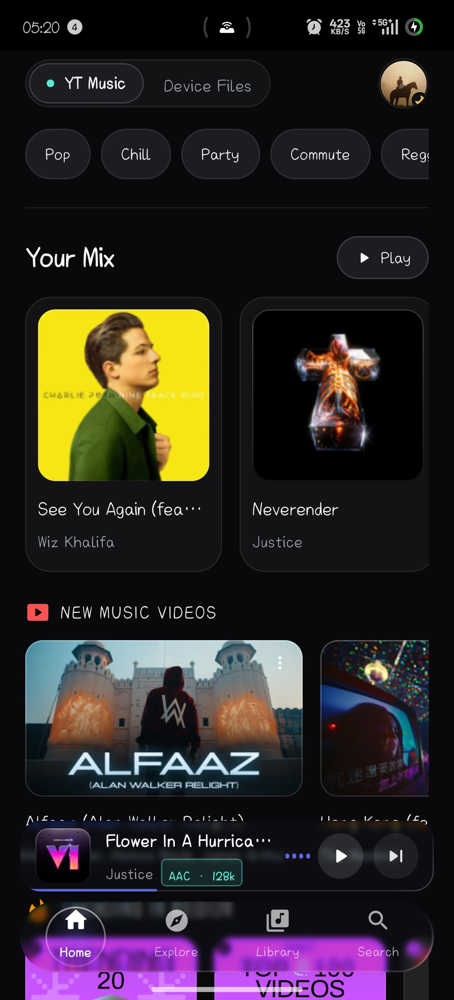
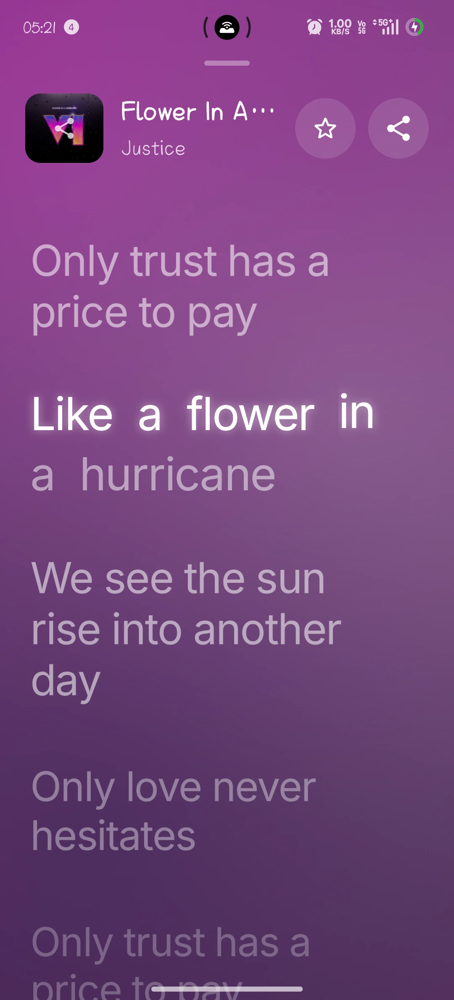
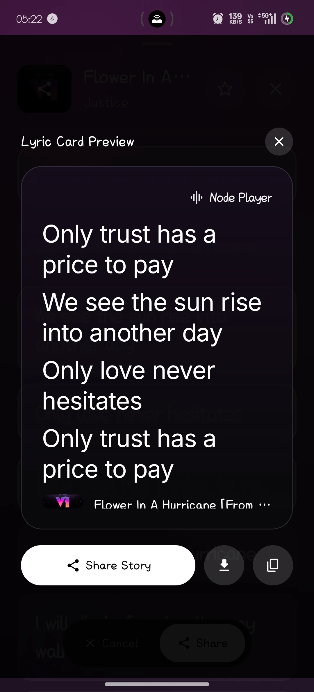
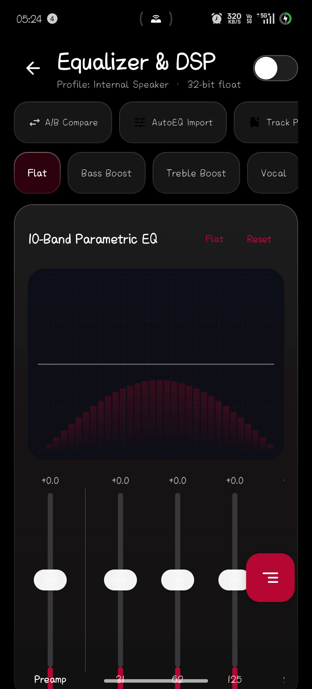

Hybrid YouTube Music & Bit-Perfect Local Audio
Switch effortlessly between limitless cloud streaming and pure offline playback with a single tap. Node Player provides a dedicated dual-mode architecture that respects both formats equally.
- ✔ ~1.1s instant cloud stream startup using 128 KB chunked range caching.
- ✔ 32-bit floating-point audio decoding for lossless FLAC, ALAC, WAV, and MP3.
- ✔ 6 dynamically hydrated shelves (Moods, Top Picks, Music Videos, Trending).
- ✔ 100% offline mode option: Zero telemetry, zero analytics, absolute silence.

120 Hz Hardware Liquid Glass UI
Experience genuine optical depth. Using custom AGSL shaders on Android 13+ and Skia hardware renderers on Desktop, Node Player renders dynamic chromatic aberration, lens refraction, and rim specular light.
- ✔ 120 Hz refresh rate lock with automatic display capability detection.
- ✔ Fluid spring physics tuned with Convx-inspired non-linear deceleration curves.
- ✔ Real-time album artwork palette bleed that adapts to every track transition.
- ✔ Hardware-synced volume slider mirroring physical device volume rocker steps.

5-Provider Word-by-Word Karaoke
Sing along with studio-accurate synchronization. Node Player queries 5 distinct lyrics providers with intelligent cascading fallback, rendering every syllable with sub-pixel 120 FPS sweep precision.
- ✔ Multi-provider fallback: BiniLyrics, BetterLyrics, LyricsPlus, LrcLib, KuGou.
- ✔ Real-time active-word glow and smooth centered automatic scrolling.
- ✔ Support for syllable-level TTML and synchronized word-timed timestamps.
- ✔ One-tap seek: Tap any lyric line to instantly jump playback to that exact millisecond.

1080×1920 & 4:3 Shareable Lyric Cards
Turn moving verses into exportable works of art. Select multiple lines in the lyrics view to launch the Lyric Card Studio with rich formatting options.
- ✔ Select up to 6 lines with real-time selection dock feedback.
- ✔ Continuous squircle album art badge and Node Player brand watermark.
- ✔ High-resolution canvas rendering optimized for Instagram Stories and messaging apps.
- ✔ One-click direct share sheet or immediate PNG save to gallery.

Full Interactive Artist Pages
Dive deep into any artist's discography. Explore rich biographical details, discography timelines, and high-resolution visuals curated directly from YouTube Music.
- ✔ 380dp edge-to-edge hero portrait with dynamic title blur transitions.
- ✔ Shuffle / Play / Follow action trio with persistent library follow tracking.
- ✔ Latest Release hero card alongside horizontally paged 4-row Top Songs.
- ✔ 7 categorized shelves (Albums, Singles, Videos, Featured, Fans Also Like).

32-Bit Float DSP & AutoEQ Integration
Take complete control over your sound signature. Built with true biquad IIR filters operating on 32-bit floating-point samples, Node Player prevents digital clipping while maximizing dynamic range.
- ✔ 10-Band parametric biquad equalizer with ±12 dB adjustment per band.
- ✔ Built-in AutoEQ Harman correction presets for popular IEMs and headphones.
- ✔ Real-time A/B comparison to instantly evaluate DSP tuning against flat signal.
- ✔ Continuous DJ Blend crossfade with normalized acoustic power curves.